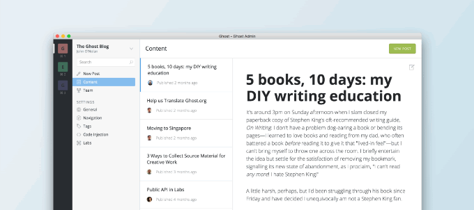

Node.js v4 LTS成为Ghost推荐版本
作者: 王赛 ●2016年7月26号
从这周起，我们将Ghost推荐Node.js版本升级为Node.js v4 LTS。我们这样做其实已经落后于计划了。然而，经过大量测试之后，我们确信Ghost可以在Node.js v4平台上流畅的运行并且内存的消耗比原来也减少了。目前，Ghost（Pro）上托
Ghost桌面版APP正式发布，能同时管理多个Ghost博客
作者: 王赛 ●2016年4月28号

虽然通过浏览器管理Ghost博客虽然很方便，但在多个tab之间切换有时候也会很麻烦，嗯，如果能有一个独立的app应该使用起来会爽一些！今天主角来了，了。。。主要变化[修复]在Ghost后台，作者（auther）无法访问自己的信
第1页/第8页
>
社区
QQ群:277327792
下载Ghost
标签云
jQuery
Ghost0.7版本
开源
助手函数
标签云
导航
自定义页面
静态页面
Roon.io
配置文件
又拍云存储
上传
Handlebars
邮件
快捷键
用户指南
主题市场
新版本发布
...